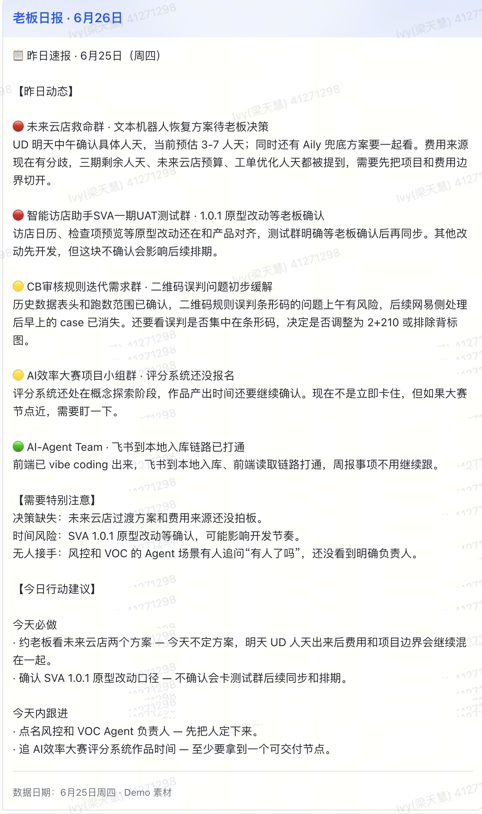
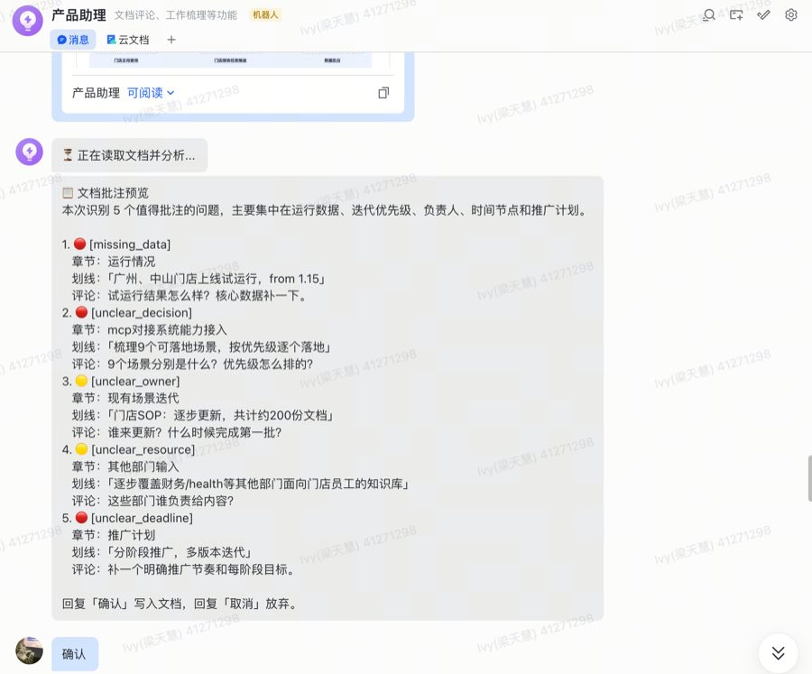
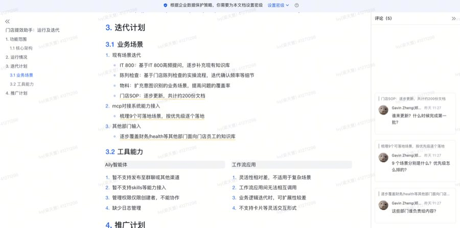

BOSS COPILOT · 阶段汇报
Boss Copilot
老板的飞书数字分身
Soul 人格底座 · Skill 场景扩展 · 让 AI 始终以老板身份处理信息工作
Soul 人格系统
Skill 扩展框架
三端通信架构
Eval 测试体系
产品定位
Boss Copilot 的三项能力
老板的飞书数字分身——Soul 人格底座 + Skill 场景扩展，让 AI 始终以老板身份处理两类信息工作并随时响应对话。
🗂
员工 / 老板 · Skill
文档预审 · 批注写入
员工按需触发，批注以老板身份直接写入飞书
📊
老板专属 · Skill
工作群日报 · 自动汇总
无需老板操作，定时推送全天工作群消息摘要
💬
Boss only · 基础能力
通用对话 · 实时回复
Boss 随时发起临时问题，Soul 人格直接驱动回复；非 Boss 消息静默处理
989 行 Soul 训练数据定义老板的语气、决策标准与禁忌；3 个业务记忆文件存储人名、项目与专有词汇
→
5 Soul + 3 记忆文件拼成约 15K 字系统指令，每次请求实时读取，配置改动无需重启即生效
→
批注→review_inline；日报→daily_report；通用对话仅 Boss 触发，不额外注入 Skill，仅靠人格底座驱动
→
消息回复 / 文档批注（OAuth token 以老板身份写入）+ 每次调用同步生成 JSONL 审计记录
数字分身 · 基础层
Soul · Memory · 人格驱动系统
Soul · 人格文件系统
5 个维度 · 522 行
表达风格
结论优先，后说原因，最后给下一步动作
句子极短 · 无寒暄客套 · 重视明确动作而非建议
决策方式
先判断目标是否清晰，再推进
关注能否快速产出 · 追问负责人 · 关注节点可执行性
管理方式
要求「人 / 时间 / 结果」三件事说清楚
对延期和模糊表达反感 · 追进度时明确下一步责任人
沟通方式
三套对象策略，自动感知切换
下属：直接可执行 · 管理层：结论+风险 · 客户：稳妥少承诺
安全边界
不替老板做最终审批或人事安排
不承诺预算与资源 · 不编造飞书历史信息 · 不输出未授权敏感判断
Memory · 业务上下文
3 类文件 · 467 行
术语表
公司内部术语 / 项目代号 / 客户名 / 产品名及常见缩写
glossary.md · 311 行 · Bot 回复时自动引用正确措辞
人员关系
关键人员职责与协作事实，帮助 Bot 正确理解「谁负责什么」
仅老板可访问
people-map.md · 52 行
项目事实
在跑项目的目标 / 当前状态 / 责任人 / 关键节点 / 风险
projects.md · 日报和批注时自动匹配项目背景
↑ 受控写入：预审摘要进入候选队列 · 按风险由 Admin / Boss 确认
蒸馏机制 · 人格如何积累
飞书历史消息
→
只提取老板发言
→
LLM 提取规律
→
hypothesis → supported
范围确认 → 候选 + 证据预览 → Admin 写 Demo / Boss 发正式版 → 原子写入 + 审计
每次请求的注入流程
Soul × 5
+
Memory × 3
+
Skill
→
buildSystemPrompt()
→
LLM 输出
Boss 使用完整 Soul；员工预审只注入批准的老板审阅画像与公共术语
管理沉淀闭环 · Skill 执行后受控积累
文档预审完成
→
自动提取问题类型 + 数量
→
进入 Memory 候选队列
例：预审《周会》→ unclear_deadline×3, unclear_owner×1
Boss 发「关注：xxx」
→
即时解析并存储
→
追加至 projects.md
下次任务自动读入作为上下文
Skill 体系
Skill 能力设计与执行边界
Skill 是在 Soul 人格基础上叠加的场景化提示词，解决「通用模型不知道老板要什么格式、什么信息密度、什么判断标准」的问题。
目前已激活 2 个 Skill。
📋
日报 daily_report
每工作日 10:00 自动触发，汇总昨日
数据来源
· 151 个群聊（user token 逐群拉取当日消息）
· 飞书妙记（user token 按时间窗自动扫描）
群分级策略
· 一级（7个）：核心团队，低门槛纳入
· 二级（60+）：业务群，仅实质内容
· 三级：默认忽略，重大异常除外
· 新群：按名称模式自动推断级别
AI 判断逻辑
不是汇总，是判断。核心问题：今天不看，明天会不会出问题？
输出结构
昨日动态（🔴🟡🟢 三级）
→ 需要特别注意（决策缺失/时间风险/无人接手）
→ 今日行动建议（今天必做 / 今天内跟进）
📝
文档预审 review_inline
老板主动触发 · 写入前需确认
触发方式
· 飞书文档链接 / 文档卡片转发
· 说"帮我批注这个文档"
· 仅老板或授权用户可触发
核心能力分组
读取理解
支持 8 种文档类型接入，自动判断类型并加载老板业务上下文
分析生成
识别 14 类业务问题，聚焦高优，提炼 ≤5 条批注草稿（不穷举）
写入管控
老板预览确认 → OAuth 身份写入飞书 → 权限校验 + 审计记录 + 反馈校准
批注流程
读文档 → 判类型 → 识别问题 → 生成 JSON 预览 → 老板确认 → 写入飞书评论区
评论风格约束
1句话内 · 追问式 · 禁止"建议/否则"
高优先 → 影响决策 / 推进阻塞 / 风险敞口
效果评测 · 日报
daily_report · 日报生成
测试方法
同一组模拟输入
→
通用模型（无 Skill）
vs
Soul + Skill
→
对比格式 / 口吻 / 关键信息 / 禁忌词
对比法而非绝对评分：控制输入变量，隔离 Skill 对输出的净增量影响；模拟输入确保可复现性，排除真实数据量带来的测试不稳定性
核心维度对比
| 核心差异 |
通用模型 |
加入 Skill 后 |
| 格式一致性 |
每次结构不同，有时按群分组，有时按时间排列，无固定格式 |
固定三段式（昨日动态 → 需特别注意 → 今日行动），老板形成阅读预期 |
| 噪音过滤 |
倾向"全面"，把"收到""了解""早上好"等也纳入，字数普遍 800+ |
以「今天不看明天有没有麻烦」为过滤标准，高噪音场景仅输出 2 条有效信息 |
| 行动可执行度 |
建议停留在"持续关注""跟进推进"等泛化动词，无法直接执行 |
要求「动词 + 对象 + 目标 + 今天的原因」，如"催 Yuki 今天核对预算表漏项，6/17 截止" |
| 场景 |
测试说明 |
通用 |
加入后 |
关键观察 |
|
DR-01
混合场景
|
紧急 + 跟踪 + 正向进展并存，验证三色分级和行动优先级 |
854 |
517 |
精简 40%，行动建议点名具体人和截止 |
|
DR-02
无异常日
|
全是正向进展，验证需注意和今天必做区块是否正确省略 |
463 |
282 |
正确省略"需注意"和"今天必做"区块 |
|
DR-03
高噪音日
|
大量闲聊打卡，验证过滤能力，有效内容仅 2 条 |
331 |
332 |
字数相近；加入后多识别出销售承诺未对齐的隐性风险 |
|
DR-04
三级群异常
|
L3 群生产系统故障，验证重大异常突破默认忽略 |
314 |
305 |
加入后额外指出无复盘方案存在再发风险 |
|
DR-05
双紧急并存
|
决策悬空 + 时间风险同时出现，验证行动建议分别对应 |
651 |
480 |
通用模型输出 Markdown 表格；加入后两条 🔴 分别对应行动 |
|
DR-06
纯妙记场景
|
无群消息仅会议纪要，验证会议结论融入而非单独列块 |
429 |
超时 |
系统提示词 15K 字 + 120s 上限，已调整至 180s 待复测 |
效果评测 · 批注
review_inline · 文档批注
核心维度对比
| 核心差异 |
通用模型 |
加入 Skill 后 |
| 输出格式结构化 |
自由输出段落式意见，有时附表格，格式不固定，无法直接对接写入接口（0 / 6） |
全部输出标准 JSON，可直接写入飞书（6 / 6） |
| 评论口吻一致性 |
「建议补充…」「需要注意…」「否则…」等解释型措辞，像顾问不像老板（平均 1.7 个禁忌词） |
追问式口吻（「谁来跟？」「时间计划是？」「没看懂～」），评论均长稳定（平均 0.2 个禁忌词） |
| 批注数量克制 |
倾向穷举所有问题，输出 6–10 条，含大量低价值细节批注，老板容易产生抵触（数量不定） |
6 个 case 全部输出恰好 5 条，优先选影响决策和推进的问题，低价值细节不过批（精确 5 条） |
| 场景 |
测试说明 |
关键观察 |
|
RI-01
计划文档
|
时间节点过紧，全程无负责人，风险写「暂无」 |
通用模型输出 Markdown 分析；加入后直接追问缺失的人和日期 |
|
RI-02
方案文档
|
目标停留在「提升体验」，无 ROI 数字，无竞品参照 |
通用模型出现「建议补充」；加入后「GMV 增长多少？投 3 人 3 个月要给数字」 |
|
RI-03
周报
|
下周计划全是「继续推进」「跟进」，无节点无验收 |
通用模型出现 2 个禁忌词；加入后聚焦 4 条无节点的下周计划 |
|
RI-04
复盘文档
|
根因写「系统压力过大」，改进措施无人无期 |
加入后批注最短（均 10 字）「压力为什么大？这不是根因～」 |
|
RI-05
需求说明
|
功能需求 4 条，无分类准确率要求，无验收标准 |
通用模型出现 3 个禁忌词；加入后「20 人天怎么算出来的～给个出处」 |
|
RI-06
会议纪要
|
4 条行动项全无责任人和截止日期 |
通用模型建议表格输出；加入后精确批注 4 条无人认领的行动项 |
测试数据尚为模拟 · 阶段二引入真实样本
日报：151 个群 / 天数据量过大，当前以模拟消息验证输出格式与判断逻辑
批注：历史批注散落群聊和线下，无法结构化收集，当前以模拟文档验证分析路径与风格约束
✓ 已验证输出格式规范性 · 口吻一致性 · 批注数量克制
→ 阶段二引入真实飞书文档，每类 10 篇，建立可复现的评测 ground truth
真实测试 · Demo 01
daily_report · 从飞书消息到老板日报
真实飞书 Demo 截图 · 6 月 26 日早晨生成，汇总 6 月 25 日群聊信息并收敛为风险与行动。
① 昨日动态 · 风险分级
真实截图

① 先看风险 · 2红 / 2黄 / 1绿
✓ 真实链路 · 历史消息读取 → Skill 生成 → 飞书卡片发送
15 个活跃群 · L1 2 / L2 10 / L3 3
数据边界 · 本次妙记未纳入
真实测试 · Demo 02
review_inline · 人工确认后写入飞书批注
真实飞书 Demo 截图 · 对已批注文档先生成 5 条预览，Boss 回复“确认”后再写入文档，避免 AI 越权改内容。
① 对话侧 · 先预览再确认
真实截图

识别 5 个批注点
确认后写入
② 文档侧 · 批注已落到原文
真实截图

正文锚点
评论栏 5 条
✓ 真实链路 · 云文档读取 → 批注预览 → 人工确认 → 写入文档
识别 5 个值得批注的问题 · 聚焦数据、决策、Owner、资源、Deadline
安全边界 · 未确认不写入
架构权限
三端架构 · 角色与上下文权限设计
📱
使用者：老板、员工白名单
载体：飞书 App（手机 / 桌面）
· 发消息 / 发文档链接
· 查看 Bot 批注结果
☁️
使用者：系统自动
载体：WebSocket 长连接（飞书云端）
· 把用户消息转发给服务器
· 把服务器回复传回给用户
🖥️
使用者：全自动运行，崩溃自动恢复
载体：本地 Mac，Node.js
· 全部业务逻辑
· 调用 LLM 服务 / 飞书 API
用户发消息→
飞书推 WebSocket 事件→
服务器权限校验 + 任务路由→
角色上下文策略→
读文档 + LLM 分析→
写批注 / 发回复→
用户看到结果
第一层：飞书平台权限（控制 Bot 能调哪些 API）
应用级权限（Bot 本身）
im:message读取群聊消息，用于日报收集
contact解析用户姓名
drive文档列表访问
用户授权（老板本人 OAuth）
im:chat获取老板所在群列表（日报）
wiki解析飞书知识库文档链接
docx:readonly读取文档正文内容（AI 分析用）
drive:write以老板身份在文档里写批注
⚠️ 读文档 + 写批注必须用老板本人授权的 token，不能用 Bot 应用的 token——批注在飞书中显示为老板本人发出。
| 角色 | 判断方式 | 可用功能 |
|---|
| Boss |
open_id 固定值 |
全部功能（含数据蒸馏、Skill 生成） |
| 员工 |
open_id 在白名单中 |
文档预审（老板审阅画像） |
| 其他人 |
不在任何列表 |
静默忽略，不回复不提示 |
| Admin |
ADMIN_OPEN_IDS |
Demo 候选审核，不可发布正式高风险 Soul |
回复语境区分
老板发消息 → AI 收到"对话者是老板本人，直接简短"
员工预审 → 仅注入批准的审阅画像，不加载老板私人 Memory / 原始证据
同一个 Bot，按角色控制可读取的上下文，而不是只靠提示词约束
系统调度
AI 调用与请求处理流程
① 接收 WebSocket 事件
飞书 SDK 长连接监听
→
→
→
⑥ 调用 LLM 服务
注入 Soul + Skill 指令，最多重试3次
⑧ Soul + Memory 注入
989行人格 + 467行记忆
⑪ AI 筛选 + 生成日报
过滤闲聊，保留进展/风险
↓
常驻
⚡ 异常兜底
报错发提示给用户
🛡 崩溃自动恢复
异常退出后3秒内自动重启
阶段总结
Bot 设计 · 结构验证 · 演进方向
A · Bot 能力设计
通用对话
Boss 随时发起临时问题，Soul 人格驱动即时回复；非 Boss 消息静默
文档批注
读取飞书文档，AI 分析后以老板身份写入 5 条精准批注
日报调度
每工作日 10:00 拉取昨日群消息，AI 筛选进展 / 风险推送日报
Boss全部功能（含蒸馏 / Skill 生成）
员工文档批注
产品决策 · 一个 Bot 覆盖两角色
老板与员工共用同一 Bot，功能隔离在代码层完成。拆分成多 Bot 的运维成本（双 App ID + 双 OAuth + 双 WebSocket）远大于隔离收益。
B · 三端通信与角色权限验证
✅ 三端通信
飞书客户端 → 飞书开放平台（WebSocket）→ 自建服务器，全链路稳定
✅ 上下文隔离
飞书权限 + 代码角色 + 任务上下文白名单，员工只读审阅画像
✅ 服务自愈
崩溃自动重启与异常兜底已验证；当前 Demo 正进行生产安全加固
所需飞书权限：im:message · contact · drive · im:chat · wiki · docx:readonly · drive:write（老板 OAuth）
产品决策 · 不设 Agent 自助配置入口
意图歧义——自然语言改配置易误改关键规则
富文本风险——AI 代写 Markdown 一次误操作影响所有用户
无对比 Review——聊天界面看不到改动前后差异
C · 下一步两个方向
Skill 深化 · 扩充覆盖场景
引入真实测试数据
替换手写模拟数据，从真实飞书文档建立测试集；每类文档 10 篇，形成可复现的 eval ground truth，同步引入模型横向对比
细化现有 Skill 能力
基于真实 eval 数据迭代日报与批注 Skill 的提示词、评分维度和兜底逻辑，持续提升与老板风格的贴合度
扩充 Skill 方向
向周报批注 / 方案文档 / 复盘报告 / 会议纪要扩展；每类建立独立 Skill 文件与配套 eval 套件
框架选型 · 积累数据后评估
现阶段结论
三端通信、角色上下文隔离、候选沉淀与服务自愈已完成代码验证；当前仍是本地 Demo，生产 API 与密钥治理待完成
评估前置条件
路径 A 完成后，积累足够真实 eval 数据，明确当前方案在哪些场景下已触达天花板，再启动框架选型评估
框架能力全维度对比
当前方案与成熟框架的优劣势、运维局限、迁移策略的详细对比分析 → 见附录
附录
当前方案 vs 成熟框架 · 能力全对比
A · 当前方案评估
当前方案优势
·
低成本 Demo
当前可调用本机订阅 CLI，生产环境预留 API
·
数据不出内网
飞书内容本地处理，无第三方云上传
·
部署简单
单 Node.js 进程，无容器化依赖
·
产品团队可迭代
改 Markdown 即调整 AI 行为，无需开发介入
·
差异化积累可迁移
Soul 精细度与飞书深度集成是独有投入，框架升级时两项均可完整保留
当前架构局限
·
架构边界
Skill 体系本质是 Markdown 注入 prompt，无 schema 校验、无 registry、无结构化输出保障——框架升级前的已知技术债
B · 能力维度对比
当前方案 · 可切换 LLM Provider
Skill 形式
Markdown 文件注入 prompt，无正式 registry，无 schema 校验
工具调用
靠提示词让模型输出 JSON，手写解析 + 重试逻辑，格式稳定性依赖 prompt
记忆管理
每次请求手动注入 Soul + Memory 文件，人工维护内容，不自动更新
模型绑定
统一 LLM client，Demo 可切换 Codex / Claude / mock，生产待接 API
部署依赖
订阅 CLI 试运行仍依赖本地机器；生产 API 化后可容器部署
✅ 成本
调用本机 CLI 不计费，AI 使用成本为零
✅ 迭代
修改 Markdown 即可调整 AI 行为，产品团队可直接操作
成熟框架 · LangChain / Hermes 类
Skill 形式
标准 Tool / Function 定义，带 schema 校验，registry 统一管理
工具调用
原生 Function Calling，结构化输出有 schema 保障，无需手写解析
记忆管理
内置向量数据库 / 会话管理，对话内容自动检索写入，持续学习
多模型支持
可同时使用多个模型，按任务类型动态选择最合适的模型
部署灵活
独立服务，可容器化部署到任意云，不绑定特定机器
⚠️ 成本
按 Token 计费，高频使用时成本随用量线性增长
⚠️ 迭代
修改 Tool 定义需写代码，技术门槛高于 Markdown 方式
VS